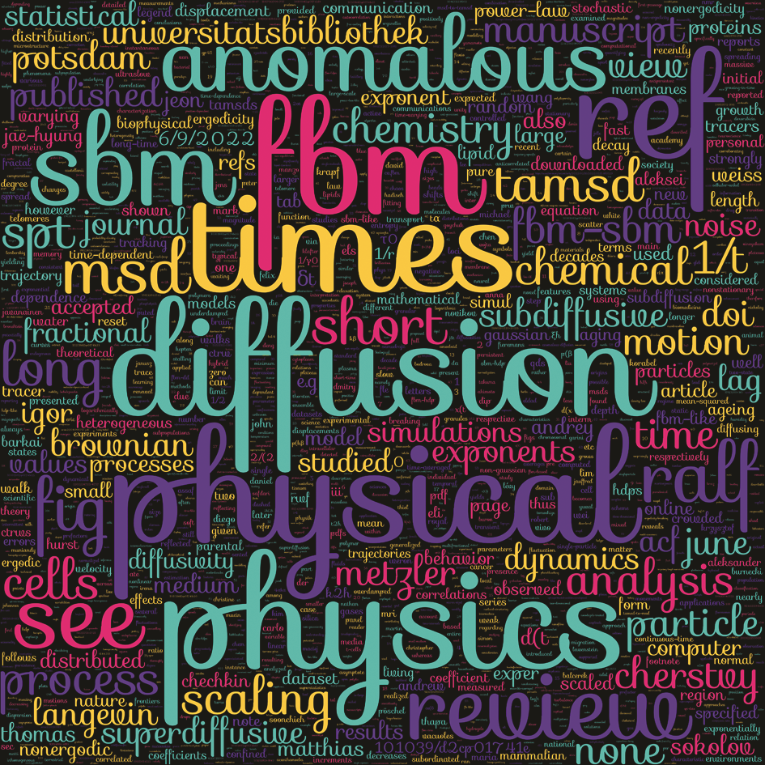

Genuine and Spurious (Non-)Ergodicity in Single Particle Tracking
Phys. Rev. X 16, 031071 (2026) · * Equal contribution
Stochastic processes · Statistical physics
I use theory and simulations to study anomalous diffusion in soft matter and biological systems. My work asks how memory, random time changes, and stochastic resetting affect what we can learn from individual particle trajectories.
Wei Wang · Theoretical & computational statistical physics

01 / WHAT I STUDY
Fractional Brownian motion, viscoelastic transport, and stochastic diffusivity.
How stochastic restart can reshape dynamics, search, and response.
Subordination, non-Markovian dynamics, and observables under random time change.
02 / SCIENTIFIC OUTPUT
Phys. Rev. X 16, 031071 (2026) · * Equal contribution
Phys. Rev. E 114, 014153 (2026)
Phys. Rev. E 111, 034121 (2025)
03 / UPDATES
Selected milestones and publications. For the full list, see the news page.
More updates ↗Our paper Genuine and Spurious (Non-)Ergodicity in Single Particle Tracking appeared in Physical Review X. Read ↗
A Physical Review E article introduced a subordination-based neural-network approach to non-Markovian Fokker–Planck equations. Read ↗
Our study comparing three definitions of fractional Brownian motion with diffusing diffusivity appeared in Physical Review E. Read ↗
COLLABORATE
I'm interested in discussions and collaborations across statistical physics, complex systems, and stochastic modelling.
Get in touch ↗